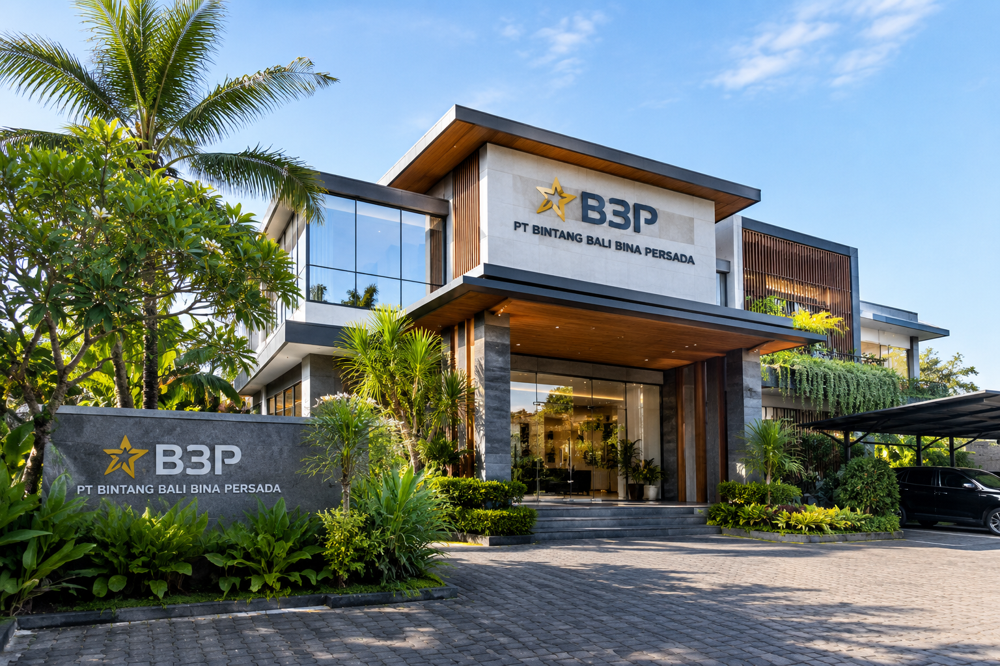
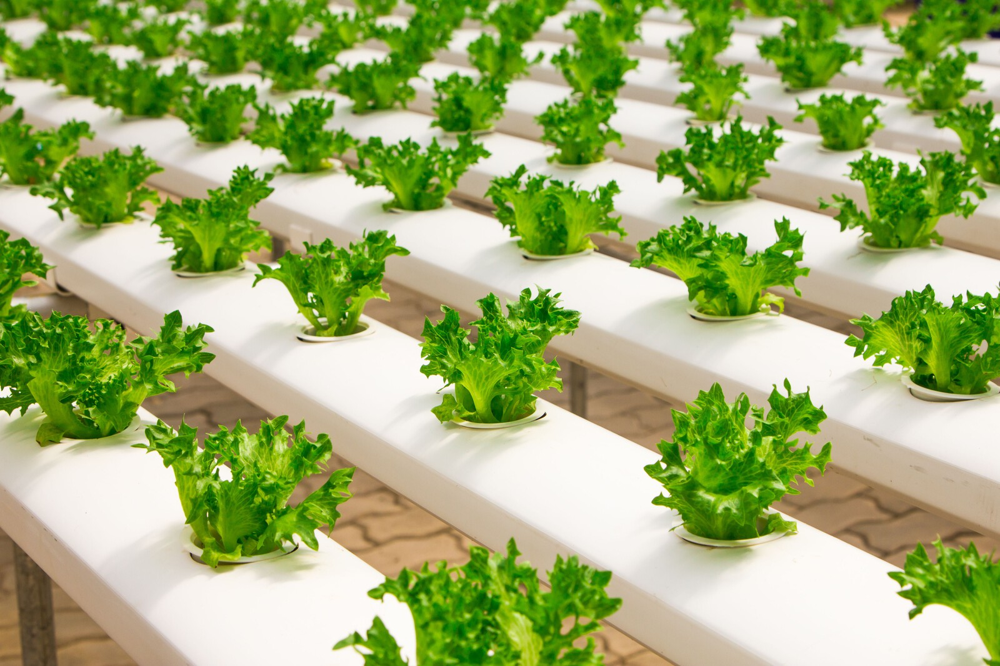

<<<<<<< HEAD:visi-misi.html
Arah dan Tujuan
VISI & MISI
======= >>>>>>> b91621b (update fitur):tentang-kami.htmlArah dan Tujuan
Kami untuk Bali
<<<<<<< HEAD:visi-misi.html Berkomitmen menghadirkan inovasi dan memperkuat kontribusi nyata bagi masyarakat. ======= Membangun ekosistem bisnis dan inovasi berbasis pengetahuan dan kearifan Bali. >>>>>>> b91621b (update fitur):tentang-kami.html
<<<<<<< HEAD:visi-misi.html

 =======
=======
VISI
"Menjadi perusahaan terdepan di Indonesia yang menghadirkan solusi inovatif berkelanjutan untuk kehidupan yang lebih baik."
MISI
- Mengembangkan produk dan teknologi inovatif yang bermanfaat bagi masyarakat.
- Membangun sumber daya manusia yang unggul dan berdaya saing.
- Mendorong kolaborasi dan kemitraan strategis untuk pertumbuhan bersama.
- Menjaga kelestarian lingkungan dan nilai-nilai budaya Bali.
Profil Singkat
Sekilas Perusahaan
PT Bintang Bali Bina Persada (B3P) adalah perusahaan berbasis pengetahuan, teknologi, kreativitas, dan pengembangan pengalaman yang dibangun untuk menghubungkan dunia pendidikan, penelitian, teknologi, industri, penerbitan, agrikultur, serta hospitality.
B3P dikembangkan bukan hanya sebagai perusahaan yang menawarkan jasa, tetapi sebagai sebuah business and innovation ecosystem yang menghasilkan berbagai produk, pengetahuan, teknologi, dan pengalaman yang dapat digunakan oleh masyarakat, institusi pendidikan, industri, pemerintah, serta berbagai mitra strategis.

Empat Pilar untuk Kemajuan Bersama
B3P mengembangkan empat pilar unit usaha yang saling terintegrasi untuk menghadirkan inovasi dan nilai tambah bagi masyarakat.


<<<<<<< HEAD:visi-misi.html
Inovasi
Tujuan Strategis
Menjadi perusahaan yang adaptif, berdaya saing, dan berkelanjutan di tingkat nasional maupun global.
Inovasi
berkelanjutan
<<<<<<< HEAD:visi-misi.html